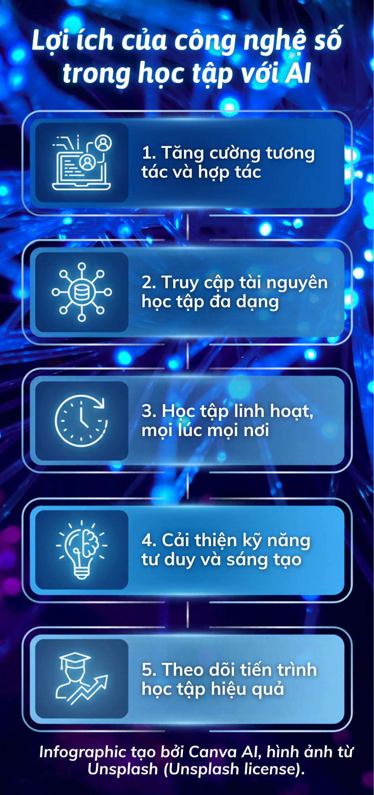

Trang web giới thiệu infographic và video về lợi ích của công nghệ số trong học tập với AI.

Xem video tại: Video YouTube
Ghi chú bản quyền: Infographic tạo bởi Canva AI, hình ảnh từ Unsplash (Unsplash license). Video được thực hiện trong nhiệm vụ 2. Mã nguồn HTML có sự hỗ trợ của GitHub Copilot.